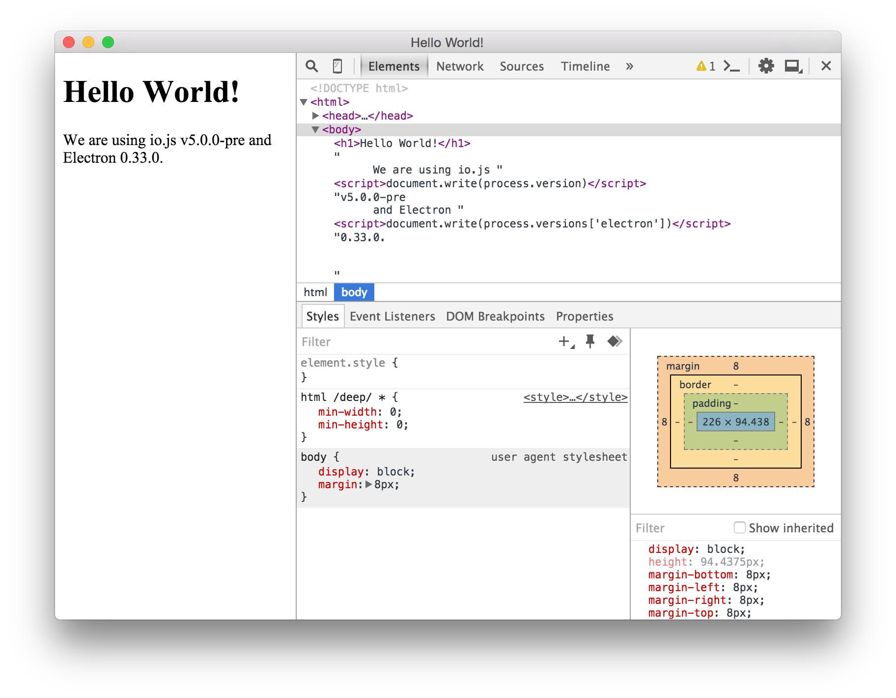
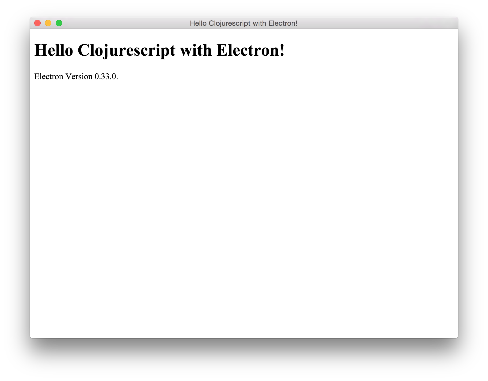

最近在研究自幹自己的 emacs，於是瞄上了 Electron 。Electron 原名為 Atom-Shell， 也就是 GitHub 開發的 ATOM 編輯器使用的 UI 介面端。Electron 和 NW.js (node-webkit) 一樣是從 Chromium 改過來的，不過目前看起來發展性比較好 (個人觀點)， 如果想要使用 node.js 去製作桌面版的圖形介面程式，Electron 和 NW.js 皆是很好的進 入點。
當然，如果你想知道 electron 和 nw.js 的差異，可以參考這篇文章: Technical Differences Between Electron and NW.js
本篇文章會先從 javascript 搭配 electron 開始，再進入到 clojurescript 的世界。
環境建立
首先當然你的系統需要安裝 node.js ，接著我們可以使用以下兩種方式其中一個，將 electron 安裝進系統或是本地專案內
# Install the `electron` command globally npm install electron-prebuilt -g # Install as a development dependency npm install electron-prebuilt --save-dev
從 javascript 世界來學 electron
在學習 clojurescript 的過程中，由於會用到一些 javascript lib 或是功能，學習一些 javascript 是不可避免的，因此讓我們從 javscript 的 electron 版本開始玩吧 :)
(這邊的 javascript 範例編譯自 Electron 官方 Quick Start 文件)
一般來說，一個 electron 專案具有以下結構
your-app/ ├── package.json ├── main.js └── index.html
package.json 定義了這個專案的名稱、版本、依賴於哪些函式庫等資訊，其內容基本上
和你在寫 node.js 程式時是一樣的，而在 main 欄位中指定的腳本則為我們主程式的進
入點。基本的 package.json 內容如下：
(如果 main 欄位並未被指派，則預設會執行 index.js 替代)
{ "name" : "your-app", "version" : "0.1.0", "main" : "main.js" }
main.js 是我們的主程式，並用來建立圖形視窗以及處理事件 (ex: 關掉視窗)，我們在此填入以下內容:
var app = require('app'); // Module to control application life. var BrowserWindow = require('browser-window'); // Module to create native browser window. // Report crashes to our server. require('crash-reporter').start(); // Keep a global reference of the window object, if you don't, the window will // be closed automatically when the JavaScript object is garbage collected. var mainWindow = null; // Quit when all windows are closed. app.on('window-all-closed', function() { // On OS X it is common for applications and their menu bar // to stay active until the user quits explicitly with Cmd + Q if (process.platform != 'darwin') { app.quit(); } }); // This method will be called when Electron has finished // initialization and is ready to create browser windows. app.on('ready', function() { // Create the browser window. mainWindow = new BrowserWindow({width: 800, height: 600}); // and load the index.html of the app. mainWindow.loadUrl('file://' + __dirname + '/index.html'); // Open the DevTools. mainWindow.openDevTools(); // Emitted when the window is closed. mainWindow.on('closed', function() { // Dereference the window object, usually you would store windows // in an array if your app supports multi windows, this is the time // when you should delete the corresponding element. mainWindow = null; }); });
簡單的來說，在 main.js 裡面，我們透過 browser-window 模組建立了一個大小為
800x600 的視窗，並起打開 chromium 的開發者工具，這個視窗顯示的內容為
index.html ，我們在此填入以下內容:
<!DOCTYPE html> <html> <head> <title>Hello World!</title> </head> <body> <h1>Hello World!</h1> We are using io.js <script>document.write(process.version)</script> and Electron <script>document.write(process.versions['electron'])</script>. </body> </html>
當你以上的程式完成後，我們就可以直接使用 electron 命令來執行我們的專案，方法如下:
coldnew@Rosia ~/your-app $ electron .
於是我們第一個 electron 程式就這樣執行起來了~

建立你的 clojurescript 專案
雖然我們可以使用 electron-template 、 lein_template_descjop 等現成的 lein 樣板， 但是這些樣板不是預設使用 grunt 或是就是使用 reagent，對於沒接觸過這些工具的人而 言就是一個麻煩，因此我們還是建立自己的樣板吧。
(本文不討論 om 或是 reagent ，單純就是使用 clojurescript 建立簡單的 electron 專案)
首先先用 lein 建立一個空白的專案
coldnew@Rosia ~/cljs $ lein new electron_test
接著修改產生出來的 project.clj ，我們要加上 cljsbuild 的編譯設定，並指定輸出資
料夾為 app 資料夾，而在編譯時的優化方面，則是使用 :simple 來優化，並將
source-map 輸出到 app 資料夾方便出問題時的除錯
(defproject electron_test "0.1.0-SNAPSHOT" :description "A simple example to use cljs with electron" :url "http://example.com/FIXME" :license {:name "Eclipse Public License" :url "http://www.eclipse.org/legal/epl-v10.html"} :dependencies [[org.clojure/clojure "1.7.0"] [org.clojure/clojurescript "1.7.28"]] :plugins [[lein-cljsbuild "1.0.6"]] :cljsbuild {:builds [{:source-paths ["src"] :compiler {:output-to "app/main.js" :source-map "app/main.js.map" :output-dir "app" :optimizations :simple :pretty-print false }}]})
接著建立 app 資料夾，並且加入 index.html 以及 package.json 檔案
coldnew@Rosia ~/cljs/electron_test $ mkdir -p app
編輯 app/index.html 加上以下內容
<!DOCTYPE html> <html> <head> <title>Hello Clojurescript with Electron!</title> </head> <body> <h1>Hello Clojurescript with Electron!</h1> Electron Version <script>document.write(process.versions['electron'])</script>. </body> </html>
編輯 app/package.json 並加入最基本的資訊
{ "name": "electron_test", "version": "0.0.1", "description": "A simeple example for cljs with electron", "main" : "main.js" }
編輯 src/electron_test/core.cljs 並加入我們的主程式
(ns electron-test.core) (def app (js/require "app")) (def browser-window (js/require "browser-window")) (.start (js/require "crash-reporter")) (def main-window (atom nil)) (.on app "window-all-closed" (fn [] (when-not (= js/process.platform "darwin") (.quit app)))) (.on app "ready" (fn [] (reset! main-window (browser-window. (clj->js {:width 800, :height 600}))) (.loadUrl @main-window (str "file://" js/__dirname "/index.html")) ;;(.openDevTools @main-window) (.on @main-window "closed" #(reset! main-window nil)) ))
最後，我們就可以使用 cljsbuild 來編譯我們的程式，如果沒出錯的話編譯出來的檔案會出現在 app 資料夾內
coldnew@Rosia ~/cljs/electron_test $ lein cljsbuild once
編譯完成後，執行 electron 就會看到結果囉 ~
coldnew@Rosia ~/cljs/electron_test $ electron app

打包並發佈你的專案
如果想要發佈你的 electron 專案出去，electron-packager 是個很方便的工具，首先我們 先安裝他:
# for use in npm scripts npm install electron-packager --save-dev # for use from cli npm install electron-packager -g
而 electron-packager 基本使用的形式是這樣子的:
electron-packager <sourcedir> <appname> --platform=<platform> --arch=<arch> --version=<version> Required options platform all, or one or more of: linux, win32, darwin (comma-delimited if multiple) arch all, ia32, x64 version see https://github.com/atom/electron/releases
也就是說，如果我們的專案產生的結果都存放在 app 資料夾，程式的名稱為 test1 ，
而我們要針對 Linux amd64 平台使用 electron v0.33.0 產生我們的執行檔的話，則
命令是這樣下的
coldnew@Rosia ~/cljs $ electron-packager app test1 --platform=linux --arch=x64 --version=0.33.0 Downloading electron-v0.33.0-linux-x64.zip [============================================>] 100.0% of 36.59 MB (184.77 kB/s) Packaging app for platform linux x64 using electron v0.33.0 Wrote new app to ~/cljs/test1-linux-x64
你會看到 electron-packager 產生了名為 test1-linux-x64 的資料夾，而裡面有以下檔案
coldnew@Rosia ~/cljs $ tree -L 1 test1-linux-x64 test1-linux-x64/ <b> ├── LICENSE ├── content_shell.pak ├── icudtl.dat ├── libgcrypt.so.11 ├── libnode.so ├── libnotify.so.4 ├── locales <b> ├── natives_blob.bin ├── resources <b> ├── snapshot_blob.bin ├── test1 <g> └── version 2 directories, 10 files
其中 test1 就是我們在 Linux 下的執行檔名稱，於是我們只要包裝這個資料夾就可以將其發佈出囉 ~
至於程式碼安全性，實際上 electron-packager 會將剛剛的 app 資料夾放置到
resource 裡面，因此真正要 release 程式時，最好使用 :advanced 編譯來優化以及保
護你的程式碼。